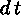

Xy-pic User's Guide 


`, i.e., a backquote and a direction d followed by
a target t, for each "turn" that starts out in the
d-direction and ends in a quarter turn towards the
target t. This is different from the curving described
earlier in that all turns consist of a straight part ending in a turn
which is a multiple of 18 circle segments, and each
segment allows separate labels.
The possible directions are those of section 1.6 and
2.6, and the possible targets include all those
discussed above. Actually the direction is only required for the
first in a series of turns since the final direction of one turn is
the obvious choice for the following turn. Furthermore, turns can be
changed from the default by adding either ^d for
anticlockwise turn to d or _d for clockwise turn to d,
where d is the "exit direction" of the turn.
Finally, the turns will have radius 10pt by default, but this
can be changed to any dimension R from a particular turn and
onwards by inserting /R immediately after the " of the
turn. Here is an example involving all of
these features:
\xymatrix{
{\circ} \ar `r[d] ^a
`[rr] ^b
`/4pt[rr] ^c
`[rrr] ^d
`_dl[drrr]^e
[drrr]^f
& {\circ} & {\circ} & {\circ} \\
{\circ} & {\circ} & {\circ} & {\circ} }typesets
The example illustrates the following points:
` per turn thus each target appears as many
times as there are turns towards it, except the last target that
appears one more time namely both with ` for each turn towards it
and once as an "ordinary" target to set the final stretch.
 .
.
Xy-pic User's Guide